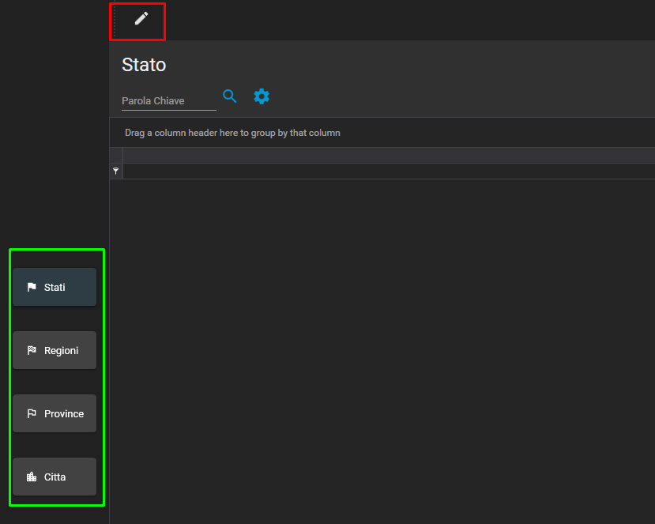
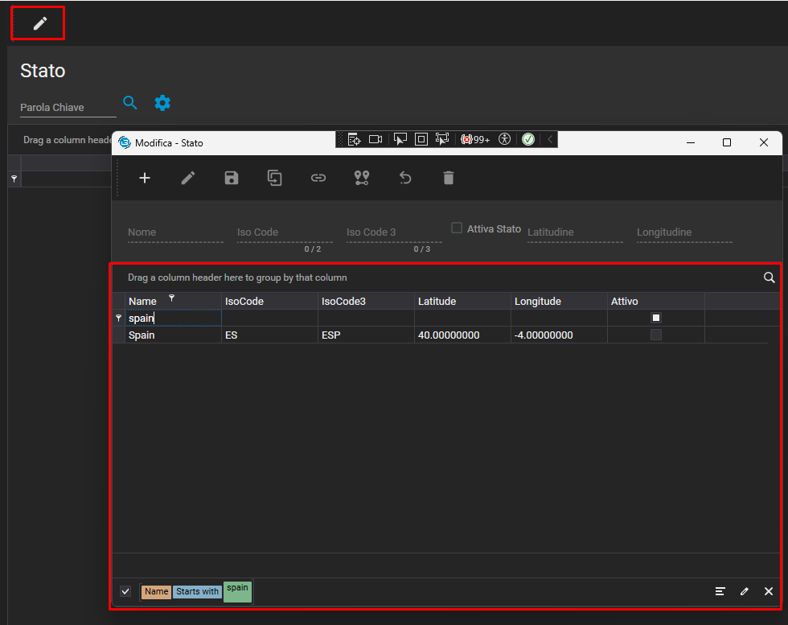

⚙️ Configurazione Attivazione TirStati per la gestione dei Cap Esteri
Guida su come caricare il Database di TirStati e come Attivare e configurare la ricerca dei cap esteri
📥 Caricamento Database
Accedere alla mega cartella _01_Aggiornamenti > DB e File Installazione e scaricare dal cliente o sul proprio pc il file TirStati.zip
Fare il restore del DataBase da SSMS con tasto destro sopra a Database:

✅ Attivazione
Dopo aver effettuato il restore del database recarsi sul modulo conferme e ativare l'automatismo RICERCA LUOGHI DATABASE NAZIONI
Una volta attivato L'automatismo sarà possibile cercare solo i Cap Italiani in quanto sarà l'unico stato attivo di default, tutto il resto sarà disabilitato per evitare di dover disattivare ogni stato non utilizzato manualmente.
Per attivare gli altri stati è necessario recarsi nella sezione Gestione Cap e Nazioni estere e attivare gli stati desiderati:
Dopo aver atteso il caricamento della pagina, sarà possibile utilizzare la ricerca e la modifica (in rosso) delle varie categorie (in verde)
Premendo modifica restando sulla sezione degli stati sarà possibile andare a modificare gli stati e quindi attivare gli stati che si vogliono utilizzare.
Nel mio caso se voglio attivare la Spagna andrò a cercare lo stato Spain, facendo doppio click e premendo modifica, mettendo il flag attivo e salvando avrò attivato con successo lo stato della spagna nelle ricerche dei Cap.
🔍 Ricerca Cap Esteri
Per utilizzare l'autocompletamento dei cap basterà recarsi su Conferme > Inserimento Conferma e inserire il nome della città, o parte del nome e premere Tab, in automatico verrà effettuata la ricerca sul nuovo DataBase.
Nel caso in cui la parola / luogo dia più risultati sarà possibile scegliere il luogo che più si preferisce e verrà riportato in automatico.
N.B.: Il sistema di ricerca funziona con i nomi in formato internazionale e non in italiano in quanto gli stati sono presi da una lista standard generale e non localizzata per l'italia.
*️⃣ Extra
Nel caso in cui si volesse rendere il modulo di configurazione disponibile al cliente basterà recarsi sulle impostazioni avanzate del menù e attivare la seguente voce:
Modifica e Gestione Cap Esteri e successivamente premere SALVA in basso.
In questo modo il cliente potrà accedere al modulo di gestione dei cap esteri e potrà attivare gli stati che più preferisce direttamente dalla sezione Import / Export.